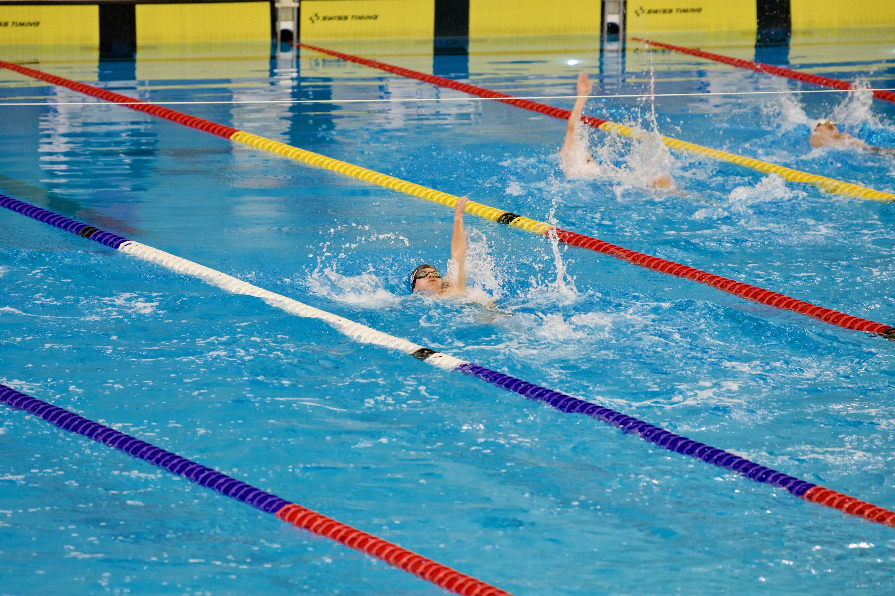
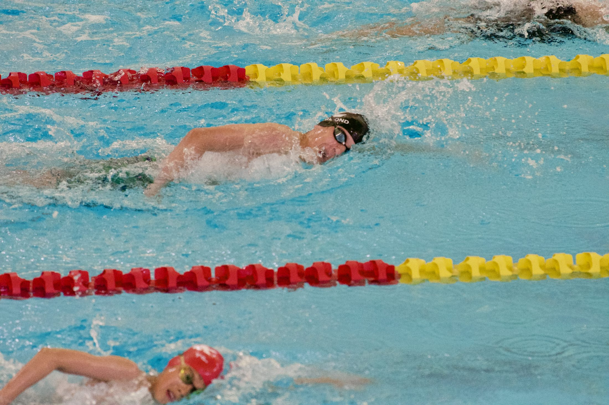

Luke Hammond
/ 2029
Times
Progress
About
Contact
See every time
Get in touch

Racing backstroke.
Every time on record
Event
Best
Yards
Canada
Dropped
Ranked in Canada in
The 400 free, four seasons
The dashed line is the Canadian Junior Trials cut.
About Luke

Racing freestyle, the event everything else is built around.
Get in touch